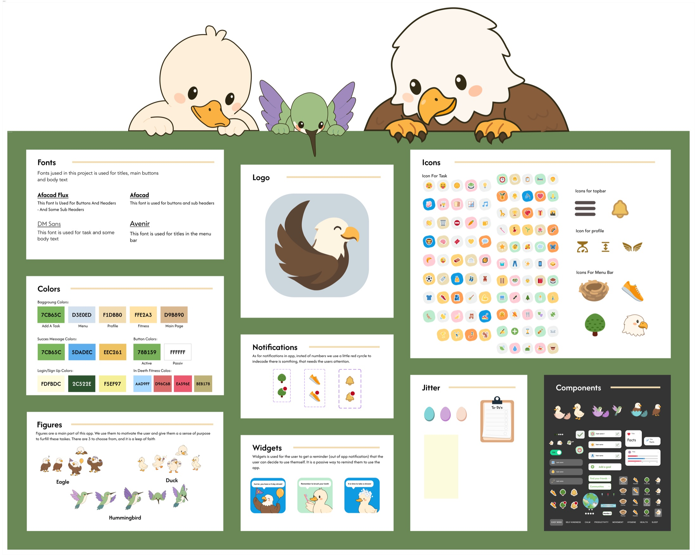

Idea
We shaped the concept from scratch and decided to focus on mental health through friendly characters, goals and everyday support.
school / web app
A mental health web app built from a completely open school brief, with small companions that follow and motivate the user along the way.

overview
Fjera was a school project where the brief was completely open. My group and I chose to build a web app focused on mental health, daily routines and small goals that could feel supportive instead of overwhelming.
The small companions became an important part of the concept. They are designed to follow the user on their journey and make the app feel more personal, soft and motivating.
process
We shaped the concept from scratch and decided to focus on mental health through friendly characters, goals and everyday support.
The interface, companions, icons, colours and design system were created in Figma and tested through a clickable prototype.
The final product was built as a React project in VS Code, taking the visual prototype into an actual web app.
visuals

next
Fjera belongs to the school area of my portfolio, where I collect larger study projects, web apps, prototypes and design process work.
back to school projects